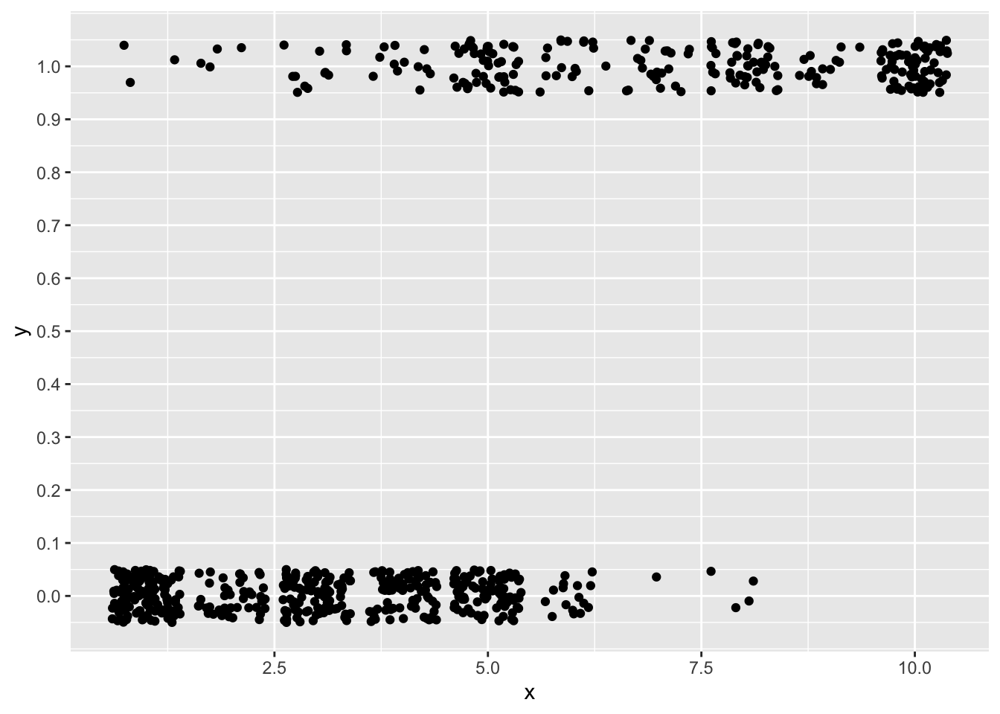
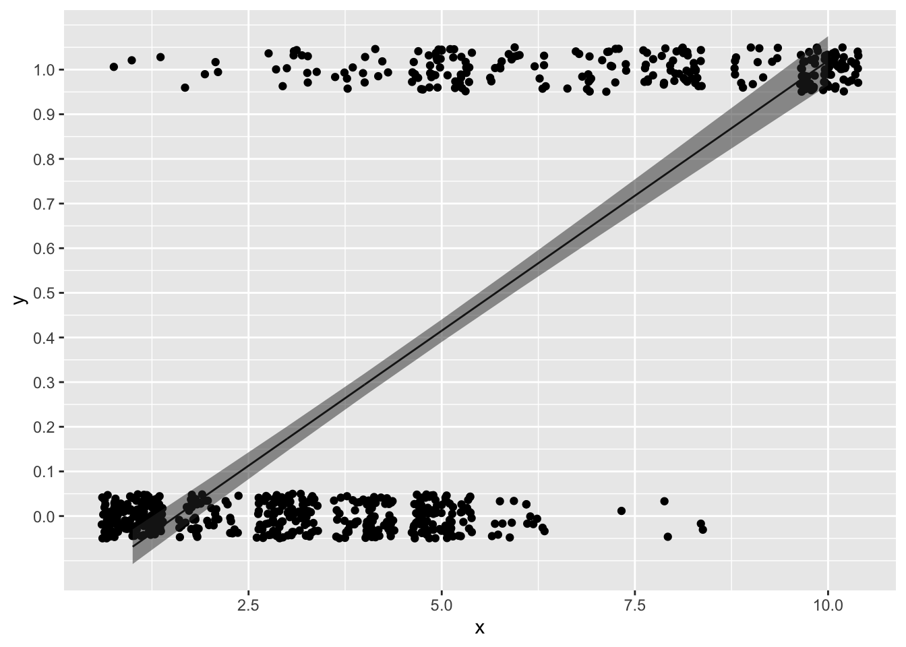
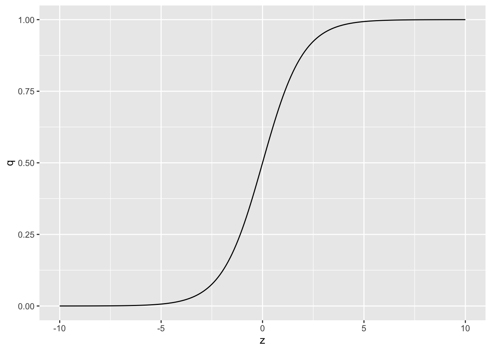
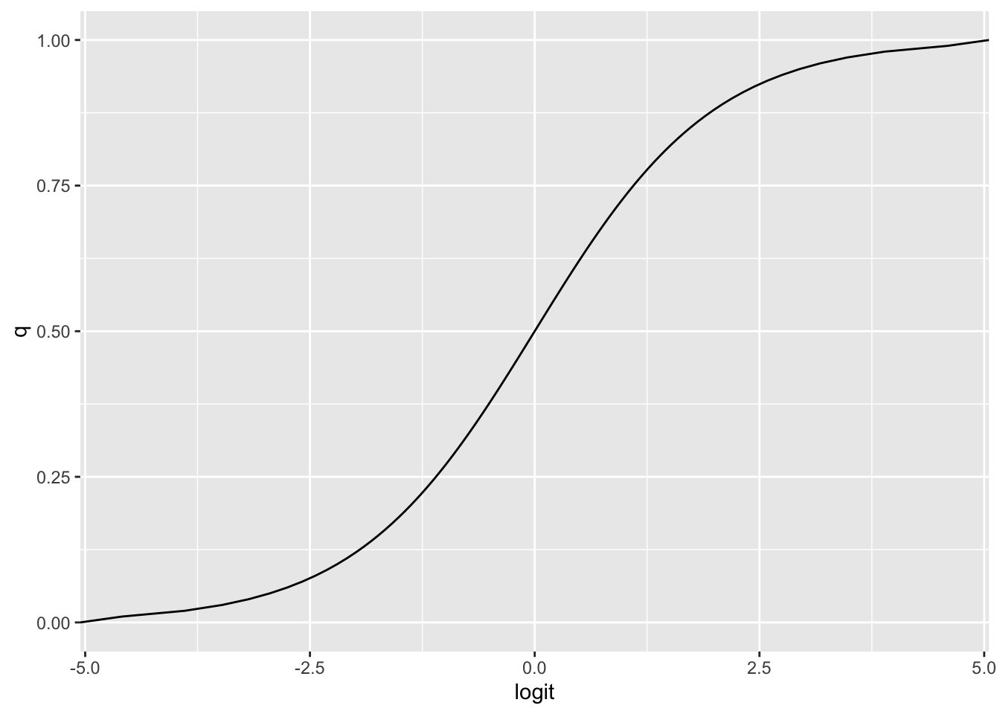
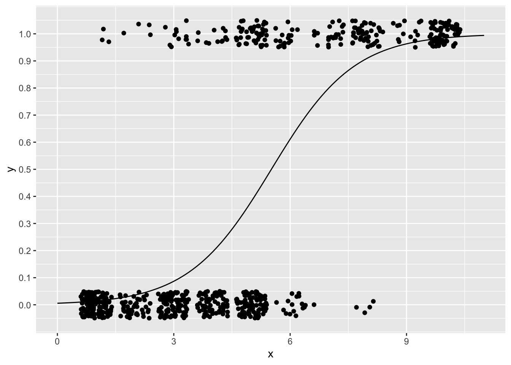

Chapter 13 一般化線形モデル（ロジスティック回帰）
確率分布が正規分布以外の場合の「一般化線形モデル」について学ぶ。まずは、ロジスティック回帰について学ぶ。
13.2 一般化線形モデル
線形モデルは、以下の式で表されるモデルであった。
\[ \begin{equation} \hat{y} = \alpha + \sum_{k=1}^{K} \beta_{k} x \\ \tag{1} y \sim \text{Normal}(\hat{y}, \sigma) \end{equation} \]
線形モデルでは、応答変数が正規分布に従うという前提で、応答変数\(y\)を予測するパラメータ（線形予測子の切片と係数、及び正規分布の分散）を求めた。
今回は、応答変数が正規分布以外の確率分布に従うモデルを扱う。
線形モデルを正規分布以外の確率分布に拡張したモデルを、一般化線形モデル(generalized linear model)という（GLMと略されることも多い）。一般化線形モデルを理解する上で重要なのは、応答変数が従う確率分布に加え、リンク関数(link function)という考え方である。
確率分布とリンク関数の組み合わせよって様々な分析を表現することができる。
13.3 ロジスティック回帰
前の章までは応答変数が量的変数の例を扱ってきた。では、応答変数がカテゴリカル変数である場合は、どのような解析をすればよいのだろうか。
応答変数が二値のカテゴリカル変数の場合を例として見ていく。
MASSパッケージに入っているサンプルデータbiopsyを使いながら検討していこう。まず、以下のプログラムを実行して、練習用のデータdatを作成する。
library(MASS)
dat = biopsy
dat$y = ifelse(dat$class == "malignant", 1, 0) #classがbenignならばゼロ、それ以外なら1という変数yを作る
dat$x = dat$V1 #V1という変数をxという名前に変える
head(dat)## ID V1 V2 V3 V4 V5 V6 V7 V8 V9 class y x
## 1 1000025 5 1 1 1 2 1 3 1 1 benign 0 5
## 2 1002945 5 4 4 5 7 10 3 2 1 benign 0 5
## 3 1015425 3 1 1 1 2 2 3 1 1 benign 0 3
## 4 1016277 6 8 8 1 3 4 3 7 1 benign 0 6
## 5 1017023 4 1 1 3 2 1 3 1 1 benign 0 4
## 6 1017122 8 10 10 8 7 10 9 7 1 malignant 1 8xは整数の変数、yは1ならば癌、0ならば癌ではないことを意味する変数とする。 xが変化すると癌である確率が変化するかを検討したい。
まず、xとyとの関係を図で確認してみる。
ggplot2パッケージで、xをx軸、yをy軸にしてプロットしてみよう。
普通にgeom_pointで散布図を作っても点が重なって見にくいので、geom_jitterを使って描画する。geom_jitterは、ランダムで点をずらして描画してくれる。
ggplot2::ggplot() +
ggplot2::geom_jitter(data = dat, aes(x = x, y = y), height = 0.05) +
ggplot2::scale_y_continuous(breaks = seq(0,1,0.1))
では、前章までで学んだとおりに、xを予測変数、yを応答変数とした線形モデルでxの効果を検討しよう。
\[ \begin{equation} \hat{y} = \alpha + \beta x \\ \tag{2} y \sim \text{Normal}(\hat{y}, \sigma) \end{equation} \]
##
## Call:
## lm(formula = y ~ 1 + x, data = dat)
##
## Residuals:
## Min 1Q Median 3Q Max
## -0.77804 -0.17331 -0.01994 0.06859 1.06859
##
## Coefficients:
## Estimate Std. Error t value Pr(>|t|)
## (Intercept) -0.189535 0.023395 -8.102 2.43e-15 ***
## x 0.120947 0.004467 27.078 < 2e-16 ***
## ---
## Signif. codes: 0 '***' 0.001 '**' 0.01 '*' 0.05 '.' 0.1 ' ' 1
##
## Residual standard error: 0.3323 on 697 degrees of freedom
## Multiple R-squared: 0.5127, Adjusted R-squared: 0.512
## F-statistic: 733.2 on 1 and 697 DF, p-value: < 2.2e-16xに係る傾きの推定値を数値通りに解釈すると、「xが1単位増えると、yが0.12増える」ことを示している。
では、求めた傾きと切片から直線を先程のxとyとの関係の図に引いてみよう。
predict_lm = predict(result_lm, interval = "confidence", level = 0.95) #直線の95%信頼区間を求める
dat_predict = cbind(dat, predict_lm)
ggplot2::ggplot() +
ggplot2::geom_jitter(data = dat, aes(x = x, y = y), height = 0.05) +
ggplot2::geom_line(data = dat_predict, aes(x = x, y = fit)) +
ggplot2::geom_ribbon(data = dat_predict, aes(x = x, ymax = upr, ymin = lwr), alpha = 0.5) +
ggplot2::scale_y_continuous(breaks = seq(0,1,0.1))
線形モデルから推定された直線は、「xが増えるほどyが増える」関係を表しているように見える。
しかし、この線形モデルの結果は、yを予測する上で問題がある。
解析の目的は、\(y = 1\)の確率、つまりがんにかかる確率を推定することであるが、例えば\(x\)が10を超えると、応答変数の予測値は1以上の値を取る。また、\(x\)が2.5を下回ったときも、0未満の数値が推定されてしまう。応答変数は0か1しか取らないのに、それぞれを超える値が予測されてしまう。これは確率の推定としては不都合である。
応答変数\(y\)は連続量ではなく、0か1の値を取るカテゴリカル変数である。連続量の確率分布である正規分布に応答変数が従うという前提を置くのは予測モデルとして適切ではない。
ではどうすれば良いのか？
解決策として、モデルを以下のように変更する。
\[ \begin{equation} q = \frac{\exp(\alpha + \beta x)}{1+\exp(\alpha + \beta x)} \\ \tag{3} y \sim \text{Binomial}(1, q) \end{equation} \]
\(\exp(\alpha + \beta x)\)は、\(e^{(\alpha + \beta x)}\)とも表記できる。
\(y = 1\)である確率（がんである確率）を\(q\)とする。
13.3.1 応答変数が従う確率分布
まず、式(3)の2つ目の式が何を意味しているのかを確認する。
\[ y \sim \text{Binomial}(1, q) \]
これは、応答変数\(y\)が試行回数1回、成功確率\(q\)の二項分布に従うということを示している。
例として、二項分布から乱数を作るrbinom()関数を使って、試行回数1回、成功確率\(q\)を0.5とした二項分布から乱数を20個を生成してみる。
## [1] 0 1 1 1 1 0 0 0 1 0 1 0 1 1 0 1 1 0 1 0このように、0か1が生成される。
13.3.2 リンク関数
式(3)の1つ目は何を意味しているのか？以下の式について、\(z = \alpha + \beta x\)として、\(z\)を変化させると\(q\)がどう変化するか図で見てみよう。
z = seq(-10, 10, 0.1) #-10から10まで0.1刻みのベクトルzを作成
q = exp(z)/(1+exp(z)) #上の式にzを代入して、qを求める
d = data.frame(z = z, q = q) #グラフを作るために、データフレームを作る
ggplot2::ggplot()+
ggplot2::geom_line(data = d, aes(x=z, y=q))
\(z\)は\(-\infty\)から\(\infty\)の範囲を取るが、\(z\)がどのような値をとっても、\(0<q<1\)となる（限りなく0もしくは1に近づく）。\(q\)は確率なので、この0から1の範囲に収まるようになる変換は都合が良い。
また、式(3)の一つ目は、 \[ q = \frac{\exp(\alpha + \beta x)}{1+\exp(\alpha + \beta x)} \]
右辺を線形予測子にして整理すると、以下のようにできる。
\[ \log\frac{q}{1-q} = \alpha + \beta x \\ \]
この変換は、ロジット関数（logit function）と呼ばれる。
13.3.3 ここまでのまとめ
線形予測子を変換する関数は、「リンク関数」と呼ばれる。上の例のように、応答変数が二値の場合は、推定値を0から1に収めるためにロジット関数をリンク関数として使うのが適切である。
このように、「応答変数が従う確率分布」と「線形予測子に変換をほどこすリンク関数」を選ぶことにより、線形モデルを様々なデータ解析に一般化させたものが一般化線形モデル(generalized linear model)である。一般化線形モデルは、「確率分布」と「リンク関数」を応答変数のタイプに応じてカスタマイズするというイメージで捉えると良い。
上の例で見た「応答変数が従う確率分布をベルヌーイ分布（または二項分布）」、「リンク関数をロジスティック関数（ロジット関数）」とした一般化線形モデルは、ロジスティック回帰と呼ばれる。
13.3.4 Rでのロジスティック回帰
Rには、一般化線形モデルを扱うための関数glm()が用意されている。線形モデルを扱うlm()と同じ要領でプログラムを書けばよいが、確率分布とリンク関数のオプションを自分で指定する必要がある。先程のサンプルデータdatで、glm()関数を使ってロジスティック回帰をやってみよう。
glmで設定すること：
「線形予測子」、「応答変数が従う確率分布」、「リンク関数」を指定する。
familyで、応答変数が従う確率分布を指定する。
family = binomial、すなわち二項分布（binomial distribution）に従うとする。（式(3)で示しているように正確にはベルヌーイ分布であるが、binomialで構わない）
(link=)で、リンク関数を指定する。ロジット関数(logit)を指定しよう。
ちなみに、(link="logit")は省略してもかまわない。family=binomialとすると、デフォルトでリンク関数をlogitとしてくれる。
では、出力結果を見てみよう。
##
## Call:
## glm(formula = y ~ 1 + x, family = binomial(link = "logit"), data = dat)
##
## Coefficients:
## Estimate Std. Error z value Pr(>|z|)
## (Intercept) -5.16017 0.37795 -13.65 <2e-16 ***
## x 0.93546 0.07377 12.68 <2e-16 ***
## ---
## Signif. codes: 0 '***' 0.001 '**' 0.01 '*' 0.05 '.' 0.1 ' ' 1
##
## (Dispersion parameter for binomial family taken to be 1)
##
## Null deviance: 900.53 on 698 degrees of freedom
## Residual deviance: 464.05 on 697 degrees of freedom
## AIC: 468.05
##
## Number of Fisher Scoring iterations: 6出力はlm()と似ている。Coefficientsの部分を見よう。Estimateがパラメータの推定結果である。Prがp値である。パラメータの推定値は、プラスならば応答変数が1の値、マイナスならば応答変数が0の値を取りやすいことを意味する。
xに係る傾きの値0.94は何を意味しているのか？
線形モデルでは傾きの推定値は、「予測変数が1単位増えたときの応答変数の変化量」を意味していた。今回の例も、xが1増えると確率が0.94上がるということを示しているのか？
一般化線形モデルの場合、係数の値が意味することの解釈には注意が必要である。
\[ \begin{equation} \log\frac{q}{1-q} = \alpha + \beta x \\ \end{equation} \] 右辺を線形の式とすると、左辺は対数オッズとなる。つまり、\(x\)に係る傾き\(\beta\)は、「\(x\)が1増えた時の\(q\)の対数オッズの変化量」を意味しており、確率\(q\)そのものの変化量ではない。このように、正規分布以外の確率分布を用いた一般化線形モデルでは、係数そのものの値を解釈するのが難しくなる点に注意が必要である。
対数オッズと確率\(q\)との関係を図で見てみよう。x軸を\(\log(q/[1-q])\)、y軸を\(q\)とした図を示す。
q = seq(0, 1, 0.01)
logit = log(q/(1-q))
sample_dat = data.frame(q = q, logit = logit)
ggplot2::ggplot() +
ggplot2::geom_line(data = sample_dat, aes(x = logit, y = q))
つまり、対数オッズがプラスだと確率\(q\)は0.5より大きくなり、対数オッズがマイナスだと確率\(q\)は0.5より小さくなる関係にある。要は、対数オッズがプラスだと\(y = 1\)が起こりやすくなり、マイナスだと起こりにくくなることを意味している。
求めた係数の推定値を元に、確率を予測する線を引いてみよう。
new = data.frame(x = seq(0, 11, 0.1))
predict_glm = predict(result_glm, newdata = new, type = "response")
dat_predict = data.frame(new, y = predict_glm)
ggplot2::ggplot() +
ggplot2::geom_jitter(data = dat, aes(x = x, y = y), height = 0.05) +
ggplot2::geom_line(data = dat_predict, aes(x = x, y = y)) +
ggplot2::scale_y_continuous(breaks = seq(0,1,0.1))
予測線は0から1の範囲に収まっており、線形予測子から確率の予測ができている。
13.5 確認問題
この章では予測変数が1つの場合で練習してきたが、一般化線形モデルでももちろん予測変数を複数加えたモデルを扱うことができる（第11章参照）。以降の確認問題では、予測変数が複数のケースで練習する。
以下のプログラムを実行し、サンプルデータを作成する。
変数の意味は以下の通りである。
Disease: ある病気にかかっているか（1=かかっている、0=かかっていない）
BMI: BMI（肥満度を表す指標）
Exercise: 1週間あたりの運動時間（単位：時間）
Sleep: 1日の睡眠時間（単位：時間）
Disease = c(0, 0, 0, 0, 0, 1, 0, 0, 0, 1, 0, 0, 1, 0, 1, 0, 1, 0, 1, 1, 1, 1, 1, 1, 0, 1, 1, 1, 1, 1)
BMI = c(15, 16, 16, 18, 19, 20, 21, 22, 22, 23, 23, 23, 24, 24, 24, 30, 31, 31, 33, 34, 34, 34, 35, 36, 40, 40, 40, 41, 43, 43)
Exercise = c(2, 1, 1, 2, 0, 3, 1, 1, 4, 4, 2, 3, 1, 3, 1, 2, 3, 2, 1, 3, 0, 1, 3, 2, 0, 2, 2, 3, 0, 4)
Sleep = c(7, 4, 5, 4, 4, 6, 5, 6, 4, 6, 4, 7, 4, 7, 4, 6, 5, 4, 5, 6, 7, 5, 4, 6, 4, 7, 5, 5, 4, 7)
data_q01 = data.frame(Disease = Disease,
BMI = BMI,
Exercise = Exercise,
Sleep = Sleep)Diseaseを応答変数、BMI、Exercise、Sleepの3つを予測変数としたロジスティック回帰を行い、それぞれの予測変数の係数について報告せよ。また、5%水準で有意な効果を持っていた予測変数を報告せよ。